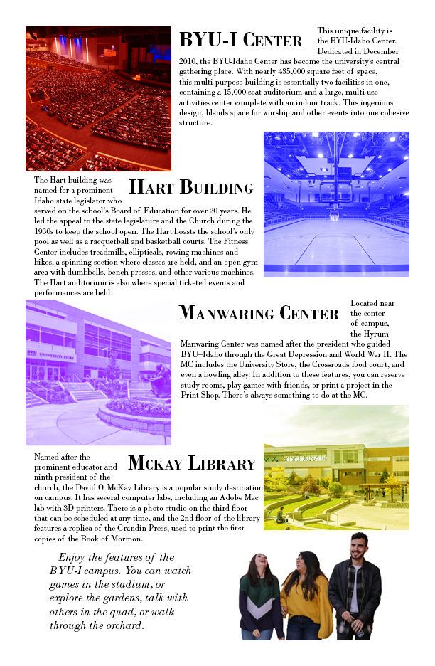

ART 125: ADOBE CC BASICS
Adobe CC Basics
One of my two art classes, Art 125 focusus on learning the tools most commonly used in graphic design. Rather than learn about art, we learn how to use Adobe products such as Illustrator, Indesign, and Photoshop. Each week we start off with a small activity where we try something new. Later that week, we do a much larger project using that something new we learned. We follow that up by reading about what we will learn at the start of the next week, letting that information marinate in our heads for the weekend before we recall it on monday.
The Bug
The bug project is my most recent project in art 125. We just spent the week learning about using the pen tool and bezier curves, so are assignment was to find a bug and use that newfound knowlage to draw it. After searching for the right one, I found a yellow ladybug that I wanted to create, and while I don't think I did the best job at making it look like a lady bug, I did make a good looking beatle.

The Collage
About four weeks in, we had the collage project. The assignment was to take eight photos and edit them in photoshop to make a sinle image. One of the first images I found was the guy painting, and I just knew what I was going to make. My biggest struggle whith this was finding a table, because the photo of the man was only waist up. In the end I settled for the best I could find and got Photoshop to create the rest of the table, which didn't end up quite right, but it was the best I had.

The Map
My map project was my midterm project. We were assigned to make a map of BYU-I, adding pictures and text along the way. I opted for a pamphlet style, and I like how it turned out.

Pixabay
One of the first projects we had was to make a Pixabay page. We had too find our own images and create our own symbols. Some definitely turned out better than others, but it was a learning experience. It was pretty basic compared to the rest of the semester, and I know now how I could do it better, easier, and faster.